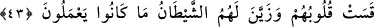

ÖNCEKİ ÜMMETLERİN
HELAK EDİLMELERİ
42. Andolsun ki, senden önceki ümmetlere de elçiler gönderdik. Ardından boyun
eğsinler diye onları darlık ve hastalıklara uğrattık.
43. Hiç olmazsa, onlara bu şekilde azabımız geldiği zaman boyun eğselerdi! Fakat
kalpleri iyice katılaştı ve şeytan da onlara yaptıklarını câzip gösterdi.
44. Kendilerine yapılan uyarıları unuttuklarında, (indirmiş olduğumuz sıkıntı ve
musibetleri kaldırıp) üzerlerine her şeyin kapılarını açtık. Nihayet kendilerine
verilenler yüzünden şımardıkları zaman onları ansızın yakaladık, birdenbire onlar
bütün ümitlerini yitirdiler.
45. Böylece zulmeden toplumun kökü kesildi. Hamd, âlemlerin Rabbi Allah’a
mahsustur.
Allah’a yemin olsun ki “senden önce de” senin zamanından önceki zamanlarda da bir
çok “ümmetlere peygamberler göndermiştik.”
“Yalvarsınlar diye onları darlık ve sıkıntı ile yakalayıp cezalandırmıştık.” Yani,
onlar peygamberlerini yalanladılar; biz de onları zorluk, fakirlik, sıkıntı ve afetlerle
yakalayıp cezalandırmıştık ki bu sıkıntıların giderilmesi için belki yalvarıp yakararak
Allah’a dua ederler, küfür ve masiyetlerinden tevbe ederler.
43. Hiç olmazsa, onlara bu şekilde azabımız geldiği zaman boyun eğselerdi! Fakat
kalpleri iyice katılaştı ve şeytan da onlara yaptıklarını câzip gösterdi.
“Hiç olmazsa kendilerine azabımız geldiği zaman yalvarsalardı” Yani, durum bunu